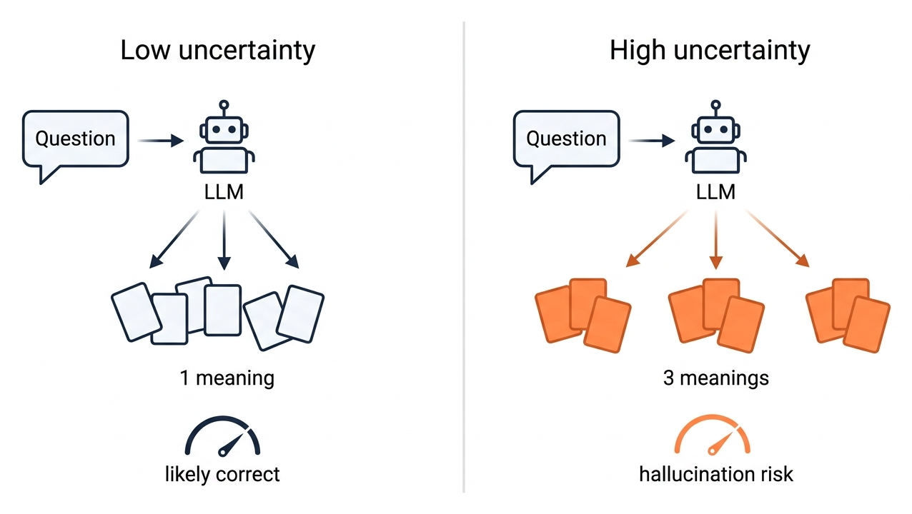

Can LLMs Know When They Are Wrong?

In one sentence
Large language models sound equally sure whether they are right or inventing things — can we get a trustworthy signal of when an answer is likely wrong, ideally before the answer is even written?
What is the problem?
Ask a chatbot for the year a small-town museum was founded, or for a court case that supports your argument. It answers in a calm, fluent paragraph, with a precise date or a case name and citation. Sometimes that is correct. Sometimes the museum date is off by twenty years and the court case does not exist. The tone is identical in both cases.
This is what people call hallucination: fluent, confident text that is not true. The deeper issue is not that the model makes mistakes — every system does — but that its confidence does not tell us which answers are the mistakes.
An LLM does produce a number internally: for every word (token) it writes, it assigns a probability. But that number answers the question "how likely is this word to come next?", not "is this statement true?". A model can be very sure about the wording of a sentence that is factually wrong.
This open problem asks: can an LLM reliably estimate when its own answer is likely to be wrong — in a way that holds up on new topics, and ideally early enough to stop the wrong answer from being written at all?
Why does it matter?
- Users cannot check everything. The point of asking a model is often that you do not know the answer yourself. A good "I'm not sure" is worth more than a confident guess.
- Agents act on answers. When an LLM is writing code, filling forms or calling tools, a wrong step is not just a wrong sentence — it is a wrong action. A reliable uncertainty signal lets the system pause and ask.
- It makes retrieval and escalation smarter. If the model knows it is unsure, it can search for sources, call a stronger model or hand over to a human only when needed, instead of always or never.
- High-stakes domains require it. In medicine, law and finance, a tool that cannot signal its own uncertainty is hard to deploy responsibly.
What would a solution look like?
A useful mental model is calibration: when the system says "80% confident", it should be right about 80% of the time, on average, across many questions. A calibrated score lets people and software set sensible thresholds — answer above this, double-check below that.
The question is where that score comes from. There are roughly four places to look:
| Signal | The question it asks |
|---|---|
| Token probability | How sure was the model about each word it wrote? |
| Consistency across samples | If I ask the same question several times, do the answers mean the same thing? |
| Self-report | If I ask the model "how confident are you?", is its stated number any good? |
| Internal state | Is there a pattern inside the network's hidden activations that separates "knows" from "is guessing"? |
The key idea: uncertainty about meaning, not words
This is the part worth slowing down for.
Suppose you ask "What is the capital of Australia?" five times. You might get "Canberra.", "The capital is Canberra.", "It's Canberra, not Sydney." The words differ a lot, so a word-level measure says the model is uncertain. But every answer means the same thing, so the model is actually sure.
Now ask about an obscure person's birthplace and you get "Lyon", "Marseille", "Lyon", "Geneva", "Paris". The words are short and each one might have been produced confidently — but the meanings disagree. That disagreement is a strong sign the model does not really know.

Measuring uncertainty this way — sample several answers, group them by meaning, see how spread out the groups are — has turned out to be a much better hallucination detector than looking at word probabilities. Its weakness is cost: it needs several full answers before it can say anything. That is why the second half of this problem matters to me: can we get a similar signal before generating, from the model's internal state when it first reads the question?
Why is it hard?
- Fine-tuning can hurt calibration. Pre-trained models are often reasonably calibrated on multiple-choice questions, but the extra training that makes them helpful and pleasant to talk to has been reported to make their confidence less meaningful.
- Open-ended answers have no single "correct" string. Many different sentences can be right, so even defining "the probability of being right" takes work.
- Consistently wrong is still wrong. If the model has learned a false fact firmly, it will repeat it every time. Sampling-based methods see agreement and report confidence.
- Shift breaks calibration. A confidence score tuned on trivia questions may not hold on medical questions, code or a new language — exactly when we need it most.
- Words of confidence are trained behavior. When a model says "I'm quite sure", that phrase is also just generated text, shaped by training to sound appropriate, not necessarily linked to what it actually knows.
What has been tried so far
- Calibrating token probabilities, for example by rescaling them on a held-out set so that confidence matches accuracy. Cheap, but limited for long, open-ended answers.
- Asking the model directly to state its confidence, in words or as a number, or to judge whether its own answer is true. This works surprisingly well for large models on some tasks, less well on others.
- Self-consistency checks: sample several answers and check whether they support each other, sentence by sentence. Needs no access to the model internals.
- Semantic entropy: group sampled answers by meaning (using another model to judge whether two answers say the same thing) and measure how spread out the groups are.
- Probing hidden states: train a small classifier on the model's internal activations to predict whether a statement is true, or whether the upcoming answer will be correct. Promising and cheap at run time, but it can learn shortcuts that do not transfer to new topics.
Each of these captures part of the picture. What is still missing is a signal that is cheap enough to run on every query, works before generation, and stays calibrated when the topic changes.
How I would approach it
- Collect question sets from several different domains — general knowledge, science, code, a specialized field — so that calibration can be tested on topics it was not tuned on.
- For each question, compute the expensive "reference" signal (semantic uncertainty from many samples) and record the model's hidden states at the moment it finishes reading the question.
- Ask whether a small probe on those hidden states can predict the expensive signal — and, more importantly, the actual correctness — without generating anything.
- Test the probe on the domains it never saw, and compare how much calibration degrades against token probability and self-reported confidence.
- Look at the geometry of those hidden states, in the spirit of OP-01: do "known" and "guessed" questions sit in visibly different regions?
Questions still open
- Is there an internal signal that predicts hallucination before the answer is generated, and how early does it appear?
- How can we catch answers that are consistently wrong, where sampling shows full agreement?
- Which uncertainty signals stay calibrated when the topic, language or task changes?
- How should uncertainty be measured for long answers that mix correct and incorrect claims?
- Can a model's stated confidence be trained to reflect its internal signal honestly, rather than sounding appropriate?
- How does misleading context change a model's uncertainty — does it become wrongly confident? (see OP-20)
This is the language-model version of the general failure-warning question in OP-01. It connects closely to OP-20 (staying reliable when the context is misleading) and OP-21 (understanding why answers flip), since an answer that flips easily is often one the model was never sure about.
Work on this together
If you work on uncertainty estimation, hallucination detection or interpretability of language models — or you deploy LLMs somewhere that a confident wrong answer is costly — I would love to hear from you. Disagreeing with how I framed the problem is just as welcome.
Reach out about OP-19Further reading
- Guo et al. — On Calibration of Modern Neural Networks (ICML 2017)
- Kadavath et al. — Language Models (Mostly) Know What They Know (arXiv 2022)
- Lin, Hilton & Evans — Teaching Models to Express Their Uncertainty in Words (TMLR 2022)
- Kuhn, Gal & Farquhar — Semantic Uncertainty: Linguistic Invariances for Uncertainty Estimation in Natural Language Generation (ICLR 2023)
- Manakul, Liusie & Gales — SelfCheckGPT: Zero-Resource Black-Box Hallucination Detection for Generative Large Language Models (EMNLP 2023)
- Azaria & Mitchell — The Internal State of an LLM Knows When It's Lying (Findings of EMNLP 2023)
- Burns et al. — Discovering Latent Knowledge in Language Models Without Supervision (ICLR 2023)
- Farquhar, Kossen, Kuhn & Gal — Detecting Hallucinations in Large Language Models Using Semantic Entropy (Nature 2024)